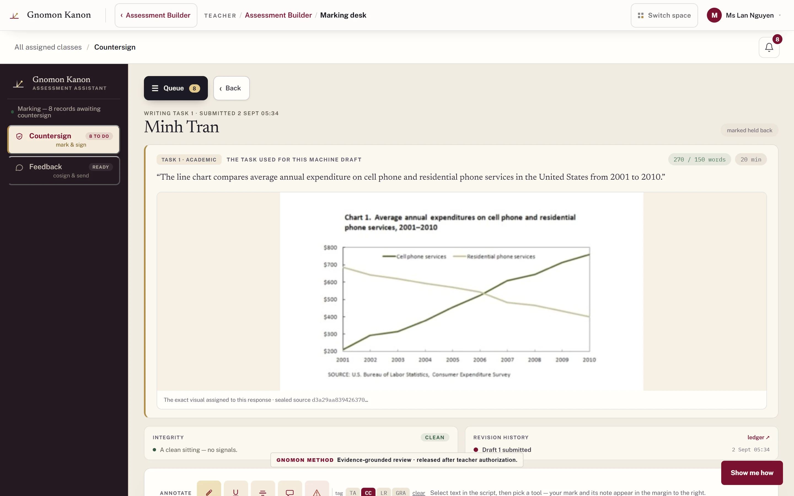

01 / PRODUCT & DATA WORKFLOWS
Gnomon
Writing assessment with a teacher in the review loop.
My contribution. Designed teacher and learner interfaces covering rubric observations, scoring and teacher review; built data-validation and model-training tooling alongside paid assessment and workflow delivery.
Data-engine record: 44 automated checks applied across 101,175 screened records. These counts describe data screening, not grading accuracy.
Open full-size prototype image Teacher interface
GNOMON · ORIGINAL LANDING
Explore the workflow in motion.
Private institutional software · school local network. Portfolio demonstration uses simulated data. Interactive desktop prototype — scroll to explore.
